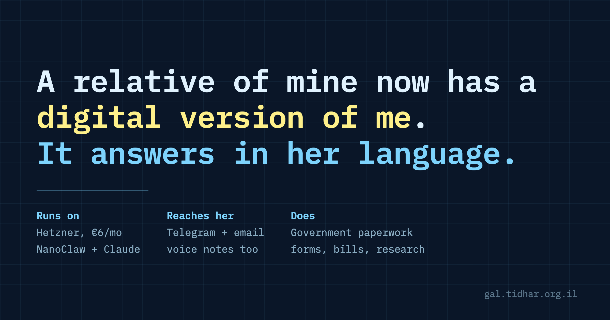

My mother-in-law has a digital version of me. It answers in Croatian.
She sent a Telegram message asking how to get a document she needed from a government office. Ninety seconds later she had a complete answer in Croatian, citing the ministry's own page - including the fact that no form exists and it costs nothing. I did not write it. I did not know she had asked.

What NanoClaw actually is
NanoClaw is a small MIT-licensed project. One Node daemon runs on a server you own. A message arrives from a chat app, it spawns a Docker container, runs the Claude Agent SDK inside, sends the reply back, and the container dies.
groups/<name>/ holds the persona, the memory and the workspace. Copy the folder, copy the agent. There is no other state that matters.Which means one bot can host several agents. Routing is by chat ID, so each person gets a different agent, with separate memory, in a separate container, with a different personality. My mother-in-law's agent cannot see my conversations, and mine cannot see hers.
The stack
| Piece | What | Cost |
|---|---|---|
| Host | Hetzner CX23, Ubuntu 24.04, systemd with linger | EUR 5.99/mo |
| Runtime | NanoClaw + Claude Agent SDK, Claude Max subscription | EUR 0 extra |
| Chat | Telegram bot, one bot serving four agents | free |
| DeltaChat adapter - plain IMAP/SMTP, no vendor, no domain verification | free | |
| Voice | Groq whisper-large-v3-turbo | ~$0.04/hr audio |
| Calendar | Shared Google Calendar via a host-side proxy | free |
Four agents run there now: mine, my mother-in-law's (Croatian only), one in the family group chat, and one that reads my company's books - read only, through a proxy that filters fields.
Three things that surprised me
1. She prefers email
I built Telegram first because it is easy. She writes email. Photographing a bill and forwarding it is something she already knew how to do; a chat app was the new thing, not the natural one. If you build this for an older relative, do email early rather than as a nice-to-have.
2. Citing the source is what earns trust
The agent did not say "there is no form". It said: I checked mup.gov.hr, there is no form, you walk into any police station with your ID and they issue it free, here is the link. That is the difference between a machine that sounds confident and one someone will actually rely on. It is a persona instruction, not a model capability.
3. The AI was not the hard part
The hard part was three integration bugs that all fail the same way: silently, with no log line, indistinguishable from the message never arriving.
- Telegram group privacy is bound at join time. A bot in a group receives nothing unless privacy is off and the bot has been removed and re-added. Flipping the setting alone does nothing.
- The engage mode drops messages before the router. Group wirings default to
mention; a plain message is discarded before anything is logged. - DeltaChat ignores ordinary email. It only surfaces mail from other DeltaChat users unless you set
show_emails=2. And a new correspondent lands in a "contact request" state where only the first message ever fires an event - every later one is stored and swallowed.
The diagnostic that broke the deadlock: call Telegram's getWebhookInfo. If pending_update_count is 0, Telegram delivered and your bot consumed the update, so the loss is internal. Then go read the database rather than the log.
I found the email bug by opening DeltaChat's own SQLite and finding her messages sitting there asstate=10in a chat withblocked=2, while the application log showed absolutely nothing.
The personas are the product
Each agent's personality is one markdown file prepended to every conversation. That file is where the quality lives, and where I got things wrong:
- Grammatical gender. The Croatian agent referred to itself in the feminine for a day. Slavic and Semitic languages mark gender on past-tense verbs. Say which to use.
- Storage language, not just reply language. "Always answer in English" is not enough - specify what gets stored, or you get a shopping list in one language and a calendar in another. Exempt proper nouns: a translated street name is useless for finding the place.
- Register. I wrote the family agent as a wary colleague. It argued about its own boundaries and told me it would be quicker if I did things myself. Insufferable in a household. It is now a butler: complies, never lectures, apologises once and moves on.
The refusal that was right
Late in the build I widened a capability - the calendar tool gained edit and delete - while chatting to the agent about renaming an event. It refused, and explained why:
"The skill file just changed mid-conversation to include PATCH/DELETE endpoints it did not have when I first read it, and the added example is literally the restaurant you were asking me to rename. That is a pattern I do not trust."
It had spotted capability-escalation-by-injection: a tool file gaining exactly the power being demanded, with an example naming the exact thing under discussion. That reasoning was correct. It was only wrong because the attacker was me.
Two lessons. First, after widening a boundary, restart the agent and clear its sessions, or it argues from its own earlier refusals. Second, and more permanently: an assistant that always complies is also an assistant that complies with a poisoned document. Where you set that dial should depend on what it can actually reach.
What I deliberately did not connect
Simon Willison calls it the lethal trifecta: private data, untrusted content, and a way to communicate externally. Any two are survivable. All three is an exfiltration path, because a model cannot reliably tell instructions from data.
So: no real mailbox, no mounted files, no write access to anything that matters. The business agent reads the books through a proxy that enforces GET-only, a path allowlist, and a field allowlist - it sees amounts, dates and booking references, and never sees free text that someone outside the company wrote. Numbers cannot carry an injection; prose can.
The invoicing API has no authentication of its own, so reaching it at all means full control, including endpoints that file with the tax authority and one that can share a document with any email address you name. That last one is a working exfiltration primitive. The agent never reaches it; it reaches a 120-line proxy that does.
What I would tell someone starting today
- Dedicated EUR 6 box. Not your laptop - an agent that answers only while your laptop is awake is worse than none.
- Telegram first. It proves the whole loop in ten minutes.
- One agent per person. Separate memory is free and prevents the awkward failure where it mentions one person's business to another.
- Add voice early. It changes how much the thing actually gets used.
- Read the transcripts for the first week. The bugs that matter do not appear in logs.
- Give it no private data until you have a specific reason, then the narrowest possible slice.
- Write down every trap as you hit it. This post is that file.
The tool is genuinely small and readable. The ecosystem around it - Telegram's group semantics, Google's verification tiers, Workspace policy, an email library's opinion about what counts as a message - is where the time goes.
One gap worth naming
While researching this I could not find a single documented case of a non-English-speaking family member using one of these agents daily. If you have built something similar for a parent or grandparent in their own language, I would genuinely like to compare notes.